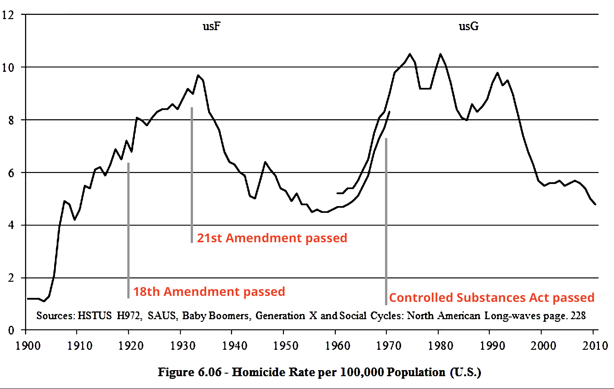

This Week in Boulder

So Monday night I was getting ready to watch CU play Florida State in the round of 32, when my excitement was derailed by news of a shooting that happened hours earlier in Boulder. Some jerkoff went to a King Soopers and killed ten people (including a police officer) before being arrested and hauled off to a hospital.
It’s a bit chilling for me, since I used to go to that store all the time. When I was a student at CU, I lived in a neighborhood called Martin Acres that was maybe two minutes away. That King Soopers was where I went to get my groceries. I also noticed that it’s a popular hangout for middle–schoolers and high–schoolers.
I really have to re-evaluate my political stance whenever this happens. I am a gun owner. I frequent places like r/liberalgunowners and the Socialist Rifle Association. I like the idea of citizens being armed. I don’t like the idea of American law enforcement being the only folks with guns. I feel empowered as a person who knows how to shoot. But when stuff like this happens, well... I feel like an asshole.
We don’t have a good discussion about gun deaths in this country. People like to throw around numbers such as “30,000–40,000 gun deaths in the US every year”. Most of those deaths are suicide (~60 to 70%). Most gun homicides are concentrated to big cities. Crime across the country has been decreasing since the 90’s. The odds of being randomly shot in a mass shooting are very, very low. And yet, it certainly is the case that those odds are still unacceptable.
I’m frustrated by the fact that mass shootings seem to be the only vessel that spurs a national discussion about gun legislation. Growing up in the Bay Area, I never noticed a spike in local murders leading to any sort of nationwide conversation. But I’m just as guilty, insofar as I only have these introspective moments when there are mass shootings. Even without these events, loads of people are still getting shot in this country, more so than any other comparable nation.
Each years passes by with similar amounts of gun deaths, but it’s rarely the case that suicide or inner–city violence works an impetus for lawmaking. Some publications will actually exclude gang violence in their definitions of mass shootings. It’s as if we’ll cite those statistics, but only after certain people (affluent white people) get shot where they’re not supposed to get shot (the grocery store). But aren’t we just splitting hairs? I’d say nobody is supposed to get shot anywhere.
What do we do? The Boulder assault weapons ban has gotten a lot of buzz lately. It was passed in 2018 and faced immediate challenges — the beef was that the Boulder City law was incompatible with the supremacy clause of the state constitution. I’m not sure to what extent the law had any enforcement mechanism before it was struck down a few weeks ago. In addition, the shooter wasn’t even from Boulder.
California passed an AWB in 2001. I can’t say I feel any safer traveling to Alameda with such a law in place. The US had a national AWB for 10 years starting in 1994. There are arguments going both ways as to what extent it did anything good. The issue is that definitions of “assault weapons” usually hone in on ergonomic features (pistol grip, telescopic stock) and magazine sizes more so than caliber or action. In some circles, these laws are derisively referred to as “scary black rifle” laws.
I suppose we would need to change our definition of “assault” weapon. Many folks as of late have been drawn to banning all semi–automatic weapons, perhaps with capacity limits. At this point I imagine we’d be facing some serious legal challenges. I also have to wonder if a ban on semi–auto weapons would just change the way people shoot each other. Instead of running around spraying and praying, someone might just hunker down somewhere and take pot shots at people with a five shot bolt action rifle for 90 minutes. But who would do such a thing?
So what does that mean? Total gun confiscation? Intuitively, that would have to work... wouldn’t it? Philosophizing aside, I’d reckon it’s a pipe dream to hope for anything of that sort. On top of how pathetically useless Congress already is, the modern interpretation of the Second Amendment is that it guarantees American citizens the right to possess a gun for defense. The only sure–fire way to change that is another amendment, which is perhaps the most difficult thing to do in American politics. Meanwhile, the current makeup of the Supreme Court likely means that any gun laws could be challenged and struck down for the next generation or so. And even if we overcome all of that, I can’t imagine the infrastructure needed for gun collection, since there are so many guns out there in the country. Who knows what would even happen.
Like most of the problems facing this country, we have apparently dug ourselves into a hole. Do we have another option? I find it conspicuous that the some of the biggest spikes in the national homicide rate occurred when Prohibition was passed, and then when the Controlled Substance Act was passed. Might as well throw in the “tough on crime” era of the 1990’s:
Why are murders in the country declining? Is it because of changes in drug legislation? Is it because Americans are drinking less? Is it because of lead abatement? It could be both all of the above. But the discussion about gun control doesn’t concern these murders. If the United States had 100 gun deaths each year and every last one of them came from a mass shooting, we’d still be having the same conversion. And that’s totally fair.
The curious thing is that more and more women and minorities are buying guns. Who could blame them? By all accounts, the guns aren’t going anywhere; might as well get some. Gun rights are minority rights after all. With regards to our suspect, it’s mostly the same old story: male, in his 20’s, with some sort of AR-15 clone. He doesn’t have a stereotypically “white” sounding name, which probably means he has already become fodder for discussion of terrorism. Beforehand, I thought the only remarkable thing about his case was his portly stature and his arrest in boxers.
This is a uniquely American problem, just like everything else that’s wrong with this country. Is it a question of mental health? Well, maybe — we empirically have the worst healthcare of any developed nation. Most of the countries with lower rates of gun violence have always had lower rates of gun violence; they also happen have some sort of universal healthcare system. Friendly reminder to the right–wingers out there that medicare for all also means mental healthcare for all. And it certainly doesn’t help that Americans are generally overworked, miserable people.
Many people talk about “common sense” gun laws. I’d say single–payer is a common sense law, but most of the Democratic party will talk more about AR-15’s than giving you healthcare. But let’s stay focused. Competent background checks are a good idea (the killer in Boulder was arrested three years ago; in addition, he was apparently known to the FBI, and yet he passed his background checks). I generally think waiting periods are a good idea (the Boulder killer got his weapon less than a week beforehand). We probably need some sort of licensing system. I think when you buy a gun, you need to deliver a practical demonstration that you know how your particular model works. Proof of safe storage is also a good idea.
All this musing is still cold comfort for the people who randomly get shot for going about their business. At the end of the day, I wonder if I have to put my political ideations aside and come back down to planet Earth. This country has a lot of guns. Lots of people get shot in this country. Is there really no connection? But hey, it's not like the country does anything good for you, unless you’re either rich, a giant corporation, or a defense contractor.
Oh, by the way… CU lost the game. The women’s team lost the same day as well. Not that it really matters.
Posted on March 24, 2021
Tags: 2021 • Rants & Raves